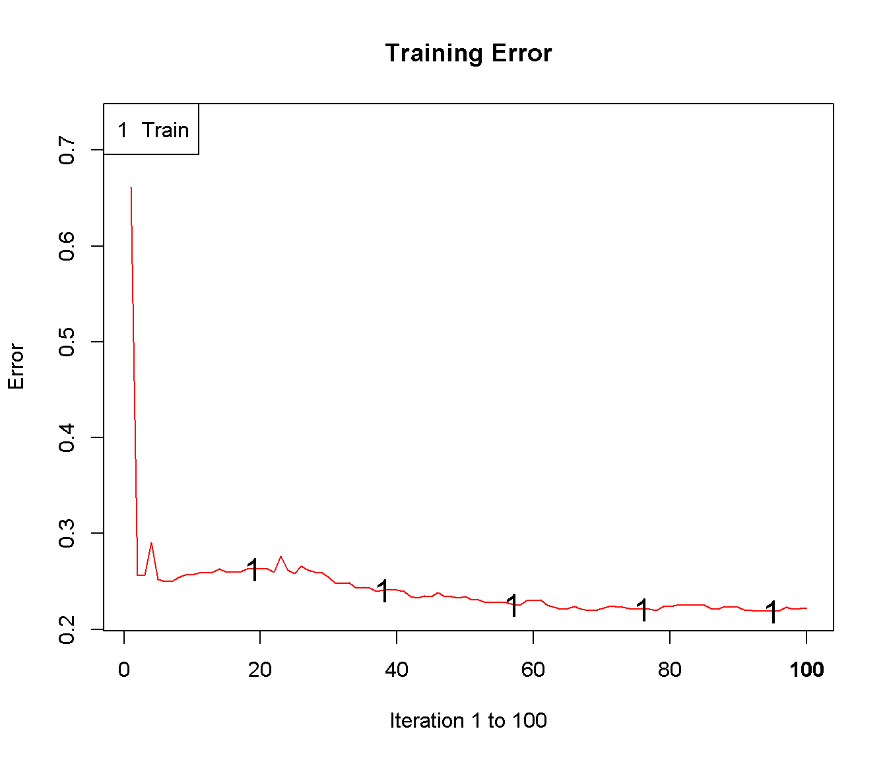
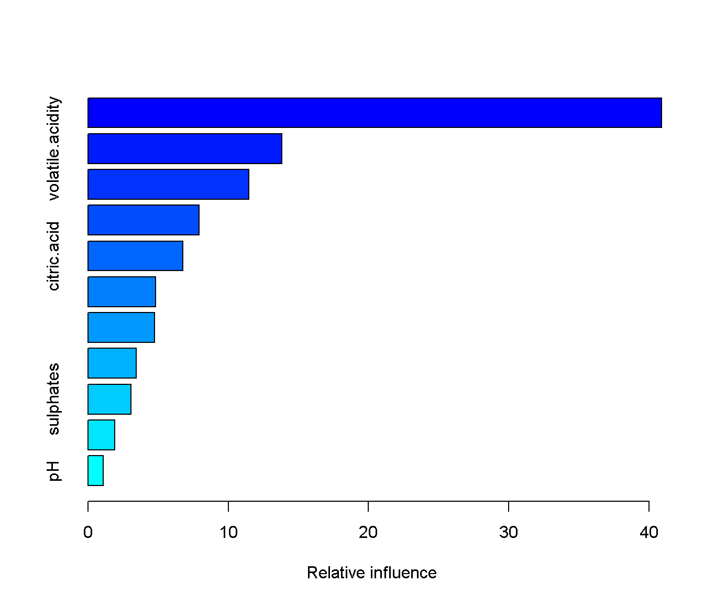
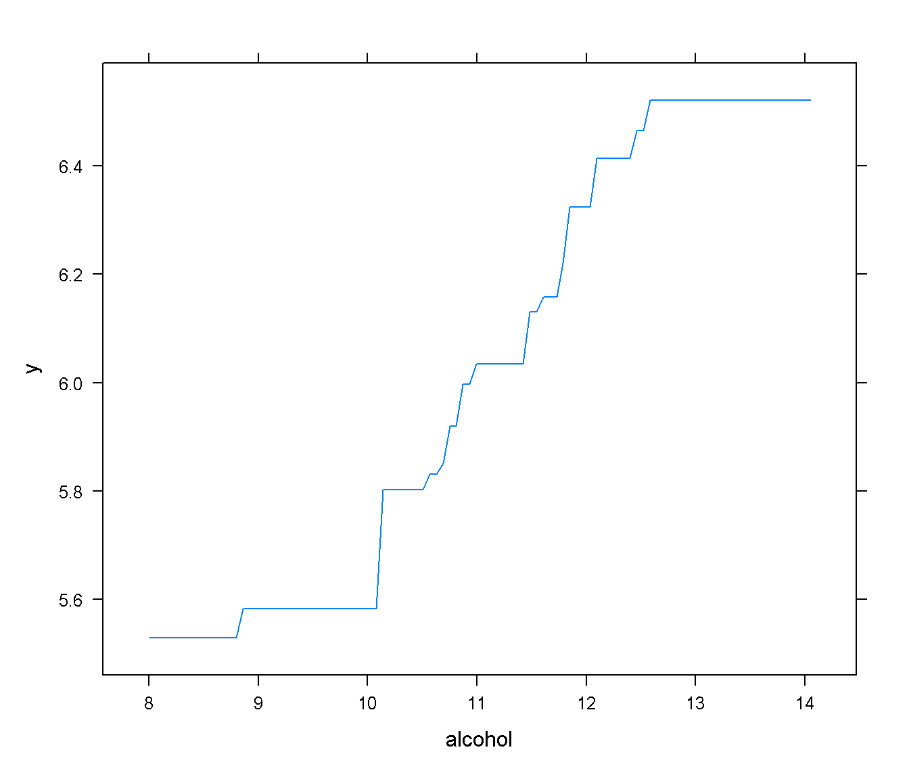

H.5 Boosting en R
Estos métodos son también de los más populares en AE y están implementados en numerosos paquetes de R: ada, adabag, mboost, gbm, xgboost…
H.5.1 Ejemplo: clasificación con el paquete ada
La función ada() del paquete ada (Culp et al., 2006) implementa diversos métodos boosting (incluyendo el algoritmo original AdaBoost).
Emplea rpart para la construcción de los árboles, aunque solo admite respuestas dicotómicas y dos funciones de pérdida (exponencial y logística).
Además, un posible problema al emplear esta función es que ordena alfabéticamente los niveles del factor, lo que puede llevar a una mala interpretación de los resultados.
Los principales parámetros son los siguientes:
ada(formula, data, loss = c("exponential", "logistic"),
type = c("discrete", "real", "gentle"), iter = 50,
nu = 0.1, bag.frac = 0.5, ...)formulaydata(opcional): permiten especificar la respuesta y las variables predictoras de la forma habitual (típicamenterespuesta ~ .; también admite matricesxeyen lugar de fórmulas).loss: función de pérdida; por defecto"exponential"(algoritmo AdaBoost).type: algoritmo boosting; por defecto"discrete"que implementa el algoritmo AdaBoost original que predice la variable respuesta. Otras alternativas son"real", que implementa el algoritmo Real AdaBoost (Friedman et al., 2000) que permite estimar las probabilidades, y"gentle", versión modificada del anterior que emplea un método Newton de optimización por pasos (en lugar de optimización exacta).iter: número de iteraciones boosting; por defecto 50.nu: parámetro de regularización \(\lambda\); por defecto 0.1 (disminuyendo este parámetro es de esperar que se obtenga una mejora en la precisión de las predicciones pero requería aumentariteraumentando notablemente el tiempo de computación y los requerimientos de memoria).bag.frac: proporción de observaciones seleccionadas al azar para crecer cada árbol; por defecto 0.5....: argumentos adicionales pararpart.control; por defectorpart.control(maxdepth = 1, cp = -1, minsplit = 0, xval = 0).
Como ejemplo consideraremos el conjunto de datos de calidad de vino empleado en las secciones G.3.2 y H.3, pero para evitar problemas reordenamos alfabéticamente los niveles de la respuesta.
load("datos/winetaste.RData")
# Reordenar alfabéticamente los niveles de winetaste$taste
# winetaste$taste <- factor(winetaste$taste, sort(levels(winetaste$taste)))
winetaste$taste <- factor(as.character(winetaste$taste))
# Partición de los datos
set.seed(1)
df <- winetaste
nobs <- nrow(df)
itrain <- sample(nobs, 0.8 * nobs)
train <- df[itrain, ]
test <- df[-itrain, ]Por ejemplo, el siguiente código llama a la función ada() con la opción para estimar probabilidades (type = "real", Real AdaBoost), considerando interacciones (de orden 2) entre los predictores (maxdepth = 2), disminuyendo ligeramente el valor del parámetro de aprendizaje y aumentando el número de iteraciones:
library(ada)
ada.boost <- ada(taste ~ ., data = train, type = "real",
control = rpart.control(maxdepth = 2, cp = 0, minsplit = 10, xval = 0),
iter = 100, nu = 0.05)
ada.boost## Call:
## ada(taste ~ ., data = train, type = "real", control = rpart.control(maxdepth = 2,
## cp = 0, minsplit = 10, xval = 0), iter = 100, nu = 0.05)
##
## Loss: exponential Method: real Iteration: 100
##
## Final Confusion Matrix for Data:
## Final Prediction
## True value bad good
## bad 162 176
## good 46 616
##
## Train Error: 0.222
##
## Out-Of-Bag Error: 0.233 iteration= 99
##
## Additional Estimates of number of iterations:
##
## train.err1 train.kap1
## 93 93Con el método plot() podemos representar la evolución del error de clasificación al aumentar el número de iteraciones:
plot(ada.boost)
Podemos evaluar la precisión en la muestra de test empleando el procedimiento habitual:
pred <- predict(ada.boost, newdata = test)
caret::confusionMatrix(pred, test$taste, positive = "good")## Confusion Matrix and Statistics
##
## Reference
## Prediction bad good
## bad 34 16
## good 50 150
##
## Accuracy : 0.736
## 95% CI : (0.6768, 0.7895)
## No Information Rate : 0.664
## P-Value [Acc > NIR] : 0.008615
##
## Kappa : 0.3426
##
## Mcnemar's Test P-Value : 4.865e-05
##
## Sensitivity : 0.9036
## Specificity : 0.4048
## Pos Pred Value : 0.7500
## Neg Pred Value : 0.6800
## Prevalence : 0.6640
## Detection Rate : 0.6000
## Detection Prevalence : 0.8000
## Balanced Accuracy : 0.6542
##
## 'Positive' Class : good
## Para obtener las estimaciones de las probabilidades, habría que establecer type = "probs" al predecir (devolverá una matriz con columnas correspondientes a los niveles):
p.est <- predict(ada.boost, newdata = test, type = "probs")
head(p.est)## [,1] [,2]
## 1 0.49877103 0.5012290
## 4 0.30922187 0.6907781
## 9 0.02774336 0.9722566
## 10 0.04596187 0.9540381
## 12 0.44274407 0.5572559
## 16 0.37375910 0.6262409Este procedimiento también está implementado en el paquete caret seleccionando el método "ada", que considera como hiperparámetros:
library(caret)
modelLookup("ada")## model parameter label forReg forClass probModel
## 1 ada iter #Trees FALSE TRUE TRUE
## 2 ada maxdepth Max Tree Depth FALSE TRUE TRUE
## 3 ada nu Learning Rate FALSE TRUE TRUEAunque por defecto la función train() solo considera nueve combinaciones de hiperparámetros:
set.seed(1)
caret.ada0 <- train(taste ~ ., method = "ada", data = train,
trControl = trainControl(method = "cv", number = 5))
caret.ada0## Boosted Classification Trees
##
## 1000 samples
## 11 predictor
## 2 classes: 'bad', 'good'
##
## No pre-processing
## Resampling: Cross-Validated (5 fold)
## Summary of sample sizes: 800, 801, 800, 800, 799
## Resampling results across tuning parameters:
##
## maxdepth iter Accuracy Kappa
## 1 50 0.7100121 0.2403486
## 1 100 0.7220322 0.2824931
## 1 150 0.7360322 0.3346624
## 2 50 0.7529774 0.3872880
## 2 100 0.7539673 0.4019619
## 2 150 0.7559673 0.4142035
## 3 50 0.7570024 0.4112842
## 3 100 0.7550323 0.4150030
## 3 150 0.7650024 0.4408835
##
## Tuning parameter 'nu' was held constant at a value of 0.1
## Accuracy was used to select the optimal model using the largest value.
## The final values used for the model were iter = 150, maxdepth = 3 and nu = 0.1.confusionMatrix(predict(caret.ada0, newdata = test), test$taste, positive = "good")## Confusion Matrix and Statistics
##
## Reference
## Prediction bad good
## bad 37 22
## good 47 144
##
## Accuracy : 0.724
## 95% CI : (0.6641, 0.7785)
## No Information Rate : 0.664
## P-Value [Acc > NIR] : 0.024724
##
## Kappa : 0.3324
##
## Mcnemar's Test P-Value : 0.003861
##
## Sensitivity : 0.8675
## Specificity : 0.4405
## Pos Pred Value : 0.7539
## Neg Pred Value : 0.6271
## Prevalence : 0.6640
## Detection Rate : 0.5760
## Detection Prevalence : 0.7640
## Balanced Accuracy : 0.6540
##
## 'Positive' Class : good
## Se puede aumentar el número de combinaciones empleando tuneLength o tuneGrid pero la búsqueda en una rejilla completa puede incrementar considerablemente el tiempo de computación.
Por este motivo se suelen seguir distintos procedimientos de búsqueda. Por ejemplo, fijar la tasa de aprendizaje (inicialmente a un valor alto) para seleccionar primero un número de interaciones y la complejidad del árbol, y posteriormente fijar estos valores para seleccionar una nueva tasa de aprendizaje (repitiendo el proceso, si es necesario, hasta convergencia).
set.seed(1)
caret.ada1 <- train(taste ~ ., method = "ada", data = train,
tuneGrid = data.frame(iter = 150, maxdepth = 3,
nu = c(0.3, 0.1, 0.05, 0.01, 0.005)),
trControl = trainControl(method = "cv", number = 5))
caret.ada1## Boosted Classification Trees
##
## 1000 samples
## 11 predictor
## 2 classes: 'bad', 'good'
##
## No pre-processing
## Resampling: Cross-Validated (5 fold)
## Summary of sample sizes: 800, 801, 800, 800, 799
## Resampling results across tuning parameters:
##
## nu Accuracy Kappa
## 0.005 0.7439722 0.3723405
## 0.010 0.7439822 0.3725968
## 0.050 0.7559773 0.4116753
## 0.100 0.7619774 0.4365242
## 0.300 0.7580124 0.4405127
##
## Tuning parameter 'iter' was held constant at a value of 150
## Tuning
## parameter 'maxdepth' was held constant at a value of 3
## Accuracy was used to select the optimal model using the largest value.
## The final values used for the model were iter = 150, maxdepth = 3 and nu = 0.1.confusionMatrix(predict(caret.ada1, newdata = test), test$taste, positive = "good")## Confusion Matrix and Statistics
##
## Reference
## Prediction bad good
## bad 40 21
## good 44 145
##
## Accuracy : 0.74
## 95% CI : (0.681, 0.7932)
## No Information Rate : 0.664
## P-Value [Acc > NIR] : 0.005841
##
## Kappa : 0.375
##
## Mcnemar's Test P-Value : 0.006357
##
## Sensitivity : 0.8735
## Specificity : 0.4762
## Pos Pred Value : 0.7672
## Neg Pred Value : 0.6557
## Prevalence : 0.6640
## Detection Rate : 0.5800
## Detection Prevalence : 0.7560
## Balanced Accuracy : 0.6748
##
## 'Positive' Class : good
## H.5.2 Ejemplo: regresión con el paquete gbm
El paquete gbm implementa el algoritmo SGB de Friedman (2002) y admite varios tipos de respuesta considerando distintas funciones de pérdida (aunque en el caso de variables dicotómicas éstas deben tomar valores en \(\{0, 1\}\)21).
La función principal es gbm() y se suelen considerar los siguientes argumentos:
gbm( formula, distribution = "bernoulli", data, n.trees = 100,
interaction.depth = 1, n.minobsinnode = 10,
shrinkage = 0.1, bag.fraction = 0.5,
cv.folds = 0, n.cores = NULL)formulaydata(opcional): permiten especificar la respuesta y las variables predictoras de la forma habitual (típicamenterespuesta ~ .; también está disponible una interfaz con matricesgbm.fit()).distribution(opcional): texto con el nombre de la distribución (o lista con el nombre ennamey parámetros adicionales en los demás componentes) que determina la función de pérdida. Si se omite se establecerá a partir del tipo de la respuesta:"bernouilli"(regresión logística) si es una variable dicotómica 0/1,"multinomial"(regresión multinomial) si es un factor (no se recomienda) y"gaussian"(error cuadrático) en caso contrario. Otras opciones que pueden ser de interés son:"laplace"(error absoluto),"adaboost"(pérdida exponencial para respuestas dicotómicas 0/1),"huberized"(pérdida de Huber para respuestas dicotómicas 0/1),"poisson"(regresión de Poisson) y"quantile"(regresión cuantil).ntrees: iteraciones/número de árboles que se crecerán; por defecto 100 (se puede emplear la funcióngbm.perf()para seleccionar un valor “óptimo”).interaction.depth: profundidad de los árboles; por defecto 1 (modelo aditivo).n.minobsinnode: número mínimo de observaciones en un nodo terminal; por defecto 10.shrinkage: parámetro de regularización \(\lambda\); por defecto 0.1.bag.fraction: proporción de observaciones seleccionadas al azar para crecer cada árbol; por defecto 0.5.cv.folds: número grupos para validación cruzada; por defecto 0 (no se hace validación cruzada). Si se asigna un valor mayor que 1 se realizará validación cruzada y se devolverá el error en la componente$cv.error(se puede emplear para seleccionar hiperparámetros).n.cores: número de núcleos para el procesamiento en paralelo.
Como ejemplo consideraremos el conjunto de datos winequality.RData:
load("datos/winequality.RData")
set.seed(1)
df <- winequality
nobs <- nrow(df)
itrain <- sample(nobs, 0.8 * nobs)
train <- df[itrain, ]
test <- df[-itrain, ]
library(gbm)
gbm.fit <- gbm(quality ~ ., data = train)## Distribution not specified, assuming gaussian ...gbm.fit## gbm(formula = quality ~ ., data = train)
## A gradient boosted model with gaussian loss function.
## 100 iterations were performed.
## There were 11 predictors of which 11 had non-zero influence.El método summary() calcula las medidas de influencia de los predictores y las representa gráficamente:
summary(gbm.fit)
## var rel.inf
## alcohol alcohol 40.907998
## volatile.acidity volatile.acidity 13.839083
## free.sulfur.dioxide free.sulfur.dioxide 11.488262
## fixed.acidity fixed.acidity 7.914742
## citric.acid citric.acid 6.765875
## total.sulfur.dioxide total.sulfur.dioxide 4.808308
## residual.sugar residual.sugar 4.758566
## chlorides chlorides 3.424537
## sulphates sulphates 3.086036
## density density 1.918442
## pH pH 1.088152Para estudiar el efecto de un predictor se pueden generar gráficos de los efectos parciales mediante el método plot():
plot(gbm.fit, i = "alcohol")
Finalmente podemos evaluar la precisión en la muestra de test empleando el código habitual:
pred <- predict(gbm.fit, newdata = test)
obs <- test$quality
# Con el paquete caret
caret::postResample(pred, obs)## RMSE Rsquared MAE
## 0.7586208 0.3001401 0.6110442# Con la función accuracy()
accuracy <- function(pred, obs, na.rm = FALSE,
tol = sqrt(.Machine$double.eps)) {
err <- obs - pred # Errores
if(na.rm) {
is.a <- !is.na(err)
err <- err[is.a]
obs <- obs[is.a]
}
perr <- 100*err/pmax(obs, tol) # Errores porcentuales
return(c(
me = mean(err), # Error medio
rmse = sqrt(mean(err^2)), # Raíz del error cuadrático medio
mae = mean(abs(err)), # Error absoluto medio
mpe = mean(perr), # Error porcentual medio
mape = mean(abs(perr)), # Error porcentual absoluto medio
r.squared = 1 - sum(err^2)/sum((obs - mean(obs))^2)
))
}
accuracy(pred, obs)## me rmse mae mpe mape r.squared
## -0.01463661 0.75862081 0.61104421 -2.00702056 10.69753668 0.29917590Este procedimiento también está implementado en el paquete caret seleccionando el método "gbm", que considera como hiperparámetros:
library(caret)
modelLookup("gbm")## model parameter label forReg forClass probModel
## 1 gbm n.trees # Boosting Iterations TRUE TRUE TRUE
## 2 gbm interaction.depth Max Tree Depth TRUE TRUE TRUE
## 3 gbm shrinkage Shrinkage TRUE TRUE TRUE
## 4 gbm n.minobsinnode Min. Terminal Node Size TRUE TRUE TRUEAunque por defecto la función train() solo considera nueve combinaciones de hiperparámetros. Para hacer una búsqueda más completa se podría seguir un procedimiento análogo al empleado con el método anterior:
set.seed(1)
caret.gbm0 <- train(quality ~ ., method = "gbm", data = train,
trControl = trainControl(method = "cv", number = 5))caret.gbm0## Stochastic Gradient Boosting
##
## 1000 samples
## 11 predictor
##
## No pre-processing
## Resampling: Cross-Validated (5 fold)
## Summary of sample sizes: 800, 801, 800, 800, 799
## Resampling results across tuning parameters:
##
## interaction.depth n.trees RMSE Rsquared MAE
## 1 50 0.7464098 0.2917796 0.5949686
## 1 100 0.7258319 0.3171046 0.5751816
## 1 150 0.7247246 0.3197241 0.5719404
## 2 50 0.7198195 0.3307665 0.5712468
## 2 100 0.7175006 0.3332903 0.5647409
## 2 150 0.7258174 0.3222006 0.5713116
## 3 50 0.7241661 0.3196365 0.5722590
## 3 100 0.7272094 0.3191252 0.5754363
## 3 150 0.7311429 0.3152905 0.5784988
##
## Tuning parameter 'shrinkage' was held constant at a value of 0.1
##
## Tuning parameter 'n.minobsinnode' was held constant at a value of 10
## RMSE was used to select the optimal model using the smallest value.
## The final values used for the model were n.trees = 100, interaction.depth =
## 2, shrinkage = 0.1 and n.minobsinnode = 10.caret.gbm1 <- train(quality ~ ., method = "gbm", data = train,
tuneGrid = data.frame(n.trees = 100, interaction.depth = 2,
shrinkage = c(0.3, 0.1, 0.05, 0.01, 0.005),
n.minobsinnode = 10),
trControl = trainControl(method = "cv", number = 5))caret.gbm1## Stochastic Gradient Boosting
##
## 1000 samples
## 11 predictor
##
## No pre-processing
## Resampling: Cross-Validated (5 fold)
## Summary of sample sizes: 800, 800, 801, 799, 800
## Resampling results across tuning parameters:
##
## shrinkage RMSE Rsquared MAE
## 0.005 0.8154916 0.2419131 0.6245818
## 0.010 0.7844257 0.2602989 0.6128582
## 0.050 0.7206972 0.3275463 0.5707273
## 0.100 0.7124838 0.3407642 0.5631748
## 0.300 0.7720844 0.2613835 0.6091765
##
## Tuning parameter 'n.trees' was held constant at a value of 100
## Tuning
## parameter 'interaction.depth' was held constant at a value of 2
##
## Tuning parameter 'n.minobsinnode' was held constant at a value of 10
## RMSE was used to select the optimal model using the smallest value.
## The final values used for the model were n.trees = 100, interaction.depth =
## 2, shrinkage = 0.1 and n.minobsinnode = 10.varImp(caret.gbm1)## gbm variable importance
##
## Overall
## alcohol 100.0000
## volatile.acidity 28.4909
## free.sulfur.dioxide 24.5158
## residual.sugar 16.8406
## fixed.acidity 12.5623
## density 10.1917
## citric.acid 9.1542
## total.sulfur.dioxide 7.2659
## chlorides 4.5106
## pH 0.1096
## sulphates 0.0000postResample(predict(caret.gbm1, newdata = test), test$quality)## RMSE Rsquared MAE
## 0.7403768 0.3329751 0.6017281H.5.3 Ejemplo: XGBoost con el paquete caret
El método boosting implementado en el paquete xgboost es uno de los más populares hoy en día.
Esta implementación proporciona parámetros adicionales de regularización para controlar la complejidad del modelo y tratar de evitar el sobreajuste.
También incluye criterios de parada, para detener la evaluación del modelo cuando los árboles adicionales no ofrecen ninguna mejora.
Dispone de una interfaz simple xgboost() y otra más avanzada xgb.train(), que admite funciones de pérdida y evaluación personalizadas.
Normalmente es necesario un preprocesado de los datos antes de llamar a estas funciones, ya que requieren de una matriz para los predictores y de un vector para la respuesta (además en el caso de que sea dicotómica debe tomar valores en \(\{0, 1\}\)). Por tanto es necesario recodificar las variables categóricas como numéricas.
Por este motivo puede ser preferible emplear la interfaz de caret.
El algoritmo estándar XGBoost, que emplea árboles como modelo base, está implementado en el método "xgbTree" de caret22.
library(caret)
# names(getModelInfo("xgb"))
modelLookup("xgbTree")## model parameter label forReg forClass
## 1 xgbTree nrounds # Boosting Iterations TRUE TRUE
## 2 xgbTree max_depth Max Tree Depth TRUE TRUE
## 3 xgbTree eta Shrinkage TRUE TRUE
## 4 xgbTree gamma Minimum Loss Reduction TRUE TRUE
## 5 xgbTree colsample_bytree Subsample Ratio of Columns TRUE TRUE
## 6 xgbTree min_child_weight Minimum Sum of Instance Weight TRUE TRUE
## 7 xgbTree subsample Subsample Percentage TRUE TRUE
## probModel
## 1 TRUE
## 2 TRUE
## 3 TRUE
## 4 TRUE
## 5 TRUE
## 6 TRUE
## 7 TRUEEste método considera los siguientes hiperparámetros:
"nrounds": número de iteraciones boosting."max_depth": profundidad máxima del árbol; por defecto 6."eta": parámetro de regularización \(\lambda\); por defecto 0.3."gamma": mínima reducción de la pérdida para hacer una partición adicional en un nodo del árbol; por defecto 0."colsample_bytree": proporción de predictores seleccionados al azar para crecer cada árbol; por defecto 1."min_child_weight": suma mínima de peso (hessiana) para hacer una partición adicional en un nodo del árbol; por defecto 1."subsample": proporción de observaciones seleccionadas al azar en cada iteración boosting; por defecto 1.
Para más información sobre parámetros adicionales se puede consultar la ayuda de xgboost::xgboost() o la lista detallada disponible en la Sección XGBoost Parameters del Manual de XGBoost.
Como ejemplo consideraremos el problema de clasificación empleando el conjunto de datos de calidad de vino:
load("datos/winetaste.RData")
set.seed(1)
df <- winetaste
nobs <- nrow(df)
itrain <- sample(nobs, 0.8 * nobs)
train <- df[itrain, ]
test <- df[-itrain, ]En este caso la función train() considera por defecto 108 combinaciones de hiperparámetros y el tiempo de computación puede ser excesivo.
caret.xgb <- train(taste ~ ., method = "xgbTree", data = train, trControl = trainControl(method = "cv", number = 5))
caret.xgb## eXtreme Gradient Boosting
##
## 1000 samples
## 11 predictor
## 2 classes: 'good', 'bad'
##
## No pre-processing
## Resampling: Cross-Validated (5 fold)
## Summary of sample sizes: 799, 801, 801, 799, 800
## Resampling results across tuning parameters:
##
## eta max_depth colsample_bytree subsample nrounds Accuracy Kappa
## 0.3 1 0.6 0.50 50 0.7479499 0.3997718
## 0.3 1 0.6 0.50 100 0.7509649 0.4226367
## 0.3 1 0.6 0.50 150 0.7480199 0.4142399
## 0.3 1 0.6 0.75 50 0.7389498 0.3775707
## 0.3 1 0.6 0.75 100 0.7499600 0.4178857
## 0.3 1 0.6 0.75 150 0.7519900 0.4194354
## 0.3 1 0.6 1.00 50 0.7479450 0.3933223
## 0.3 1 0.6 1.00 100 0.7439499 0.3946755
## 0.3 1 0.6 1.00 150 0.7479699 0.4054549
## 0.3 1 0.8 0.50 50 0.7279446 0.3514309
## 0.3 1 0.8 0.50 100 0.7379647 0.3901818
## 0.3 1 0.8 0.50 150 0.7289797 0.3702869
## 0.3 1 0.8 0.75 50 0.7419548 0.3853122
## 0.3 1 0.8 0.75 100 0.7419798 0.3939408
## 0.3 1 0.8 0.75 150 0.7490050 0.4119554
## 0.3 1 0.8 1.00 50 0.7469399 0.3903359
## 0.3 1 0.8 1.00 100 0.7469349 0.3994462
## 0.3 1 0.8 1.00 150 0.7429499 0.3930019
## 0.3 2 0.6 0.50 50 0.7469800 0.4072389
## 0.3 2 0.6 0.50 100 0.7560152 0.4315043
## 0.3 2 0.6 0.50 150 0.7470550 0.4202096
## 0.3 2 0.6 0.75 50 0.7419347 0.3991878
## 0.3 2 0.6 0.75 100 0.7419398 0.3985245
## 0.3 2 0.6 0.75 150 0.7408999 0.4048017
## 0.3 2 0.6 1.00 50 0.7529250 0.4183744
## 0.3 2 0.6 1.00 100 0.7559601 0.4332161
## 0.3 2 0.6 1.00 150 0.7439798 0.4082169
## 0.3 2 0.8 0.50 50 0.7479801 0.4039828
## 0.3 2 0.8 0.50 100 0.7439500 0.4017708
## 0.3 2 0.8 0.50 150 0.7409099 0.4002330
## 0.3 2 0.8 0.75 50 0.7549701 0.4309398
## 0.3 2 0.8 0.75 100 0.7469550 0.4077312
## 0.3 2 0.8 0.75 150 0.7529701 0.4282530
## 0.3 2 0.8 1.00 50 0.7509800 0.4151042
## 0.3 2 0.8 1.00 100 0.7479899 0.4164189
## 0.3 2 0.8 1.00 150 0.7439498 0.4044785
## 0.3 3 0.6 0.50 50 0.7529851 0.4322174
## 0.3 3 0.6 0.50 100 0.7479900 0.4200214
## 0.3 3 0.6 0.50 150 0.7499800 0.4307546
## 0.3 3 0.6 0.75 50 0.7499550 0.4263366
## 0.3 3 0.6 0.75 100 0.7519201 0.4321688
## 0.3 3 0.6 0.75 150 0.7459449 0.4177412
## 0.3 3 0.6 1.00 50 0.7529251 0.4220849
## 0.3 3 0.6 1.00 100 0.7519400 0.4237486
## 0.3 3 0.6 1.00 150 0.7519500 0.4294623
## 0.3 3 0.8 0.50 50 0.7510299 0.4327919
## 0.3 3 0.8 0.50 100 0.7519799 0.4405268
## 0.3 3 0.8 0.50 150 0.7619652 0.4559423
## 0.3 3 0.8 0.75 50 0.7470501 0.4131934
## 0.3 3 0.8 0.75 100 0.7479849 0.4129185
## 0.3 3 0.8 0.75 150 0.7509850 0.4261251
## 0.3 3 0.8 1.00 50 0.7449099 0.4008981
## 0.3 3 0.8 1.00 100 0.7610054 0.4422136
## 0.3 3 0.8 1.00 150 0.7569803 0.4382787
## 0.4 1 0.6 0.50 50 0.7370397 0.3774680
## 0.4 1 0.6 0.50 100 0.7340546 0.3874281
## 0.4 1 0.6 0.50 150 0.7490550 0.4204110
## 0.4 1 0.6 0.75 50 0.7330097 0.3695029
## 0.4 1 0.6 0.75 100 0.7269447 0.3595653
## 0.4 1 0.6 0.75 150 0.7409999 0.3999882
## 0.4 1 0.6 1.00 50 0.7389548 0.3787453
## 0.4 1 0.6 1.00 100 0.7479499 0.4061188
## 0.4 1 0.6 1.00 150 0.7410049 0.3940049
## 0.4 1 0.8 0.50 50 0.7269246 0.3647893
## 0.4 1 0.8 0.50 100 0.7459551 0.4088011
## 0.4 1 0.8 0.50 150 0.7359947 0.3910800
## 0.4 1 0.8 0.75 50 0.7369797 0.3798786
## 0.4 1 0.8 0.75 100 0.7329997 0.3808412
## 0.4 1 0.8 0.75 150 0.7410149 0.4007794
## 0.4 1 0.8 1.00 50 0.7429449 0.3889734
## 0.4 1 0.8 1.00 100 0.7549401 0.4194777
## 0.4 1 0.8 1.00 150 0.7499600 0.4117257
## 0.4 2 0.6 0.50 50 0.7340497 0.3817464
## 0.4 2 0.6 0.50 100 0.7330547 0.3836073
## 0.4 2 0.6 0.50 150 0.7429900 0.4086515
## 0.4 2 0.6 0.75 50 0.7490100 0.4065411
## 0.4 2 0.6 0.75 100 0.7399647 0.4013642
## 0.4 2 0.6 0.75 150 0.7480149 0.4165452
## 0.4 2 0.6 1.00 50 0.7519601 0.4189103
## 0.4 2 0.6 1.00 100 0.7559751 0.4326368
## 0.4 2 0.6 1.00 150 0.7649804 0.4559090
## 0.4 2 0.8 0.50 50 0.7430148 0.4088033
## 0.4 2 0.8 0.50 100 0.7459399 0.4110881
## 0.4 2 0.8 0.50 150 0.7359897 0.3929835
## 0.4 2 0.8 0.75 50 0.7509801 0.4207733
## 0.4 2 0.8 0.75 100 0.7399848 0.3993503
## 0.4 2 0.8 0.75 150 0.7429548 0.4092104
## 0.4 2 0.8 1.00 50 0.7609753 0.4402344
## 0.4 2 0.8 1.00 100 0.7669804 0.4572722
## 0.4 2 0.8 1.00 150 0.7559651 0.4339887
## 0.4 3 0.6 0.50 50 0.7440298 0.4091740
## 0.4 3 0.6 0.50 100 0.7559752 0.4388366
## 0.4 3 0.6 0.50 150 0.7659354 0.4555764
## 0.4 3 0.6 0.75 50 0.7560301 0.4384091
## 0.4 3 0.6 0.75 100 0.7540000 0.4330182
## 0.4 3 0.6 0.75 150 0.7549501 0.4357856
## 0.4 3 0.6 1.00 50 0.7449599 0.4072659
## 0.4 3 0.6 1.00 100 0.7569501 0.4386990
## 0.4 3 0.6 1.00 150 0.7589451 0.4502683
## 0.4 3 0.8 0.50 50 0.7420546 0.4035922
## 0.4 3 0.8 0.50 100 0.7489598 0.4278516
## 0.4 3 0.8 0.50 150 0.7439448 0.4158271
## 0.4 3 0.8 0.75 50 0.7509599 0.4200445
## 0.4 3 0.8 0.75 100 0.7459798 0.4164791
## 0.4 3 0.8 0.75 150 0.7599402 0.4479586
## 0.4 3 0.8 1.00 50 0.7569851 0.4333259
## 0.4 3 0.8 1.00 100 0.7439549 0.4063617
## 0.4 3 0.8 1.00 150 0.7459649 0.4162883
##
## Tuning parameter 'gamma' was held constant at a value of 0
## Tuning
## parameter 'min_child_weight' was held constant at a value of 1
## Accuracy was used to select the optimal model using the largest value.
## The final values used for the model were nrounds = 100, max_depth = 2, eta
## = 0.4, gamma = 0, colsample_bytree = 0.8, min_child_weight = 1 and subsample
## = 1.caret.xgb$bestTune## nrounds max_depth eta gamma colsample_bytree min_child_weight subsample
## 89 100 2 0.4 0 0.8 1 1varImp(caret.xgb)## xgbTree variable importance
##
## Overall
## alcohol 100.000
## volatile.acidity 27.693
## citric.acid 23.788
## free.sulfur.dioxide 23.673
## fixed.acidity 20.393
## residual.sugar 15.734
## density 10.956
## chlorides 8.085
## sulphates 3.598
## pH 2.925
## total.sulfur.dioxide 0.000confusionMatrix(predict(caret.xgb, newdata = test), test$taste)## Confusion Matrix and Statistics
##
## Reference
## Prediction good bad
## good 147 46
## bad 19 38
##
## Accuracy : 0.74
## 95% CI : (0.681, 0.7932)
## No Information Rate : 0.664
## P-Value [Acc > NIR] : 0.005841
##
## Kappa : 0.3671
##
## Mcnemar's Test P-Value : 0.001260
##
## Sensitivity : 0.8855
## Specificity : 0.4524
## Pos Pred Value : 0.7617
## Neg Pred Value : 0.6667
## Prevalence : 0.6640
## Detection Rate : 0.5880
## Detection Prevalence : 0.7720
## Balanced Accuracy : 0.6690
##
## 'Positive' Class : good
## Se podría seguir una estrategia de búsqueda similar a la empleada en los métodos anteriores.
Se puede evitar este inconveniente empleando la interfaz de
caret.↩︎Otras alternativas son:
"xgbDART"que también emplean árboles como modelo base, pero incluye el método DART (Vinayak y Gilad-Bachrach, 2015) para evitar sobreajuste (básicamente descarta árboles al azar en la secuencia), y"xgbLinear"que emplea modelos lineales.↩︎